Snakes of Egypt
30 snake species are recorded in Egypt in SnakeList: 15 venomous and 15 non-venomous, from 9 families.
- 30species
- 15venomous
- 15non-venomous
- 9families
These totals count the snakes SnakeList records as living in Egypt. A species counts if it is recorded anywhere in the country, so not every snake lives in every region.
Species
Showing 30 species
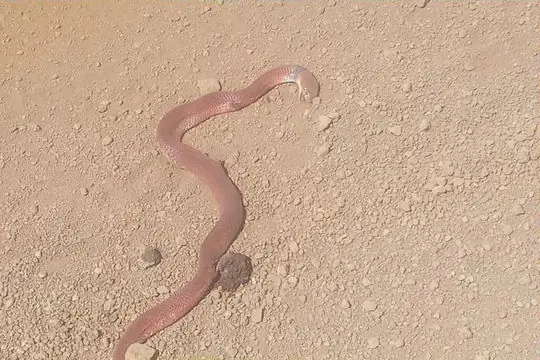
African CobraNaja pallida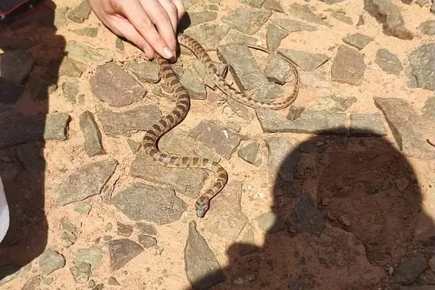
Algerian Whip SnakeHemorrhois algirus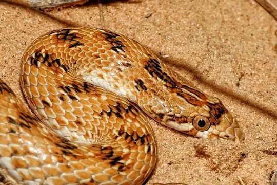
Awl-headed SnakeLytorhynchus diadema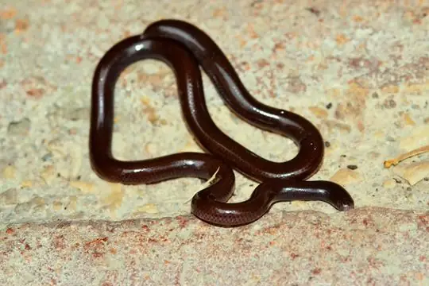
Brahminy BlindsnakeIndotyphlops braminus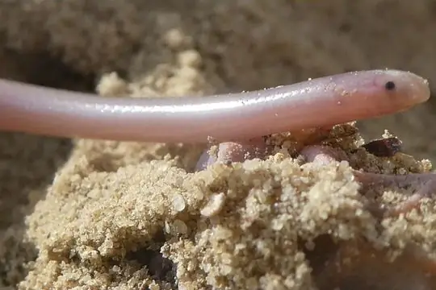
Cairo Blind SnakeMyriopholis cairi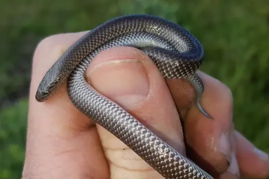
Cape Wolf Snake (capense)Lycophidion capense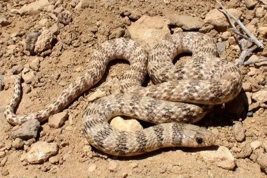
Crowned Dwarf RacerEirenis coronella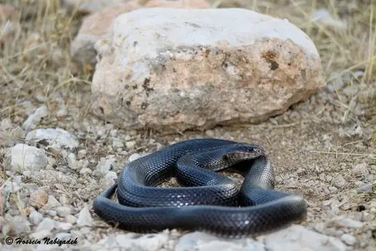
Desert CobraWalterinnesia aegyptia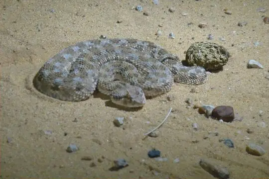
Desert Horned ViperCerastes cerastes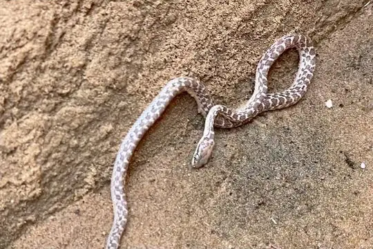
Egyptian CatsnakeTelescopus obtusus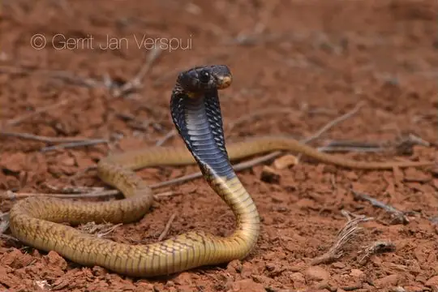
Egyptian CobraNaja haje- No photo yetEgyptian Egg-eaterDasypeltis bazi
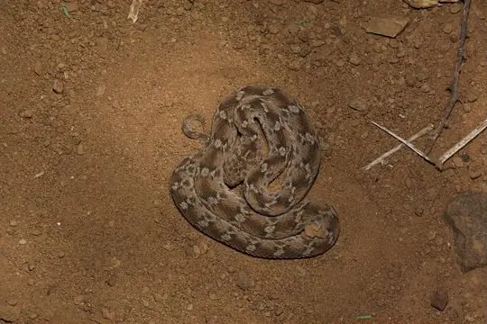
Egyptian Saw-scaled ViperEchis pyramidum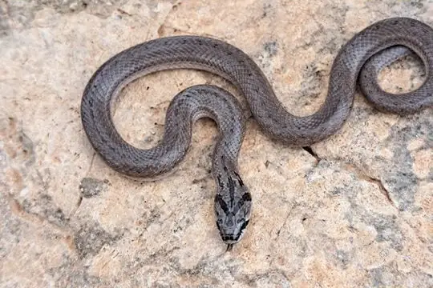
False Smooth Snake (cucullatus)Macroprotodon cucullatus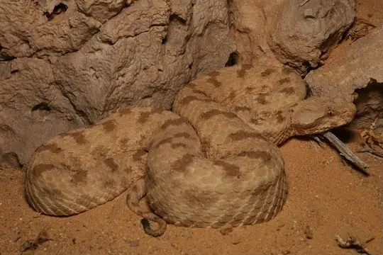
Field's Horned ViperPseudocerastes fieldi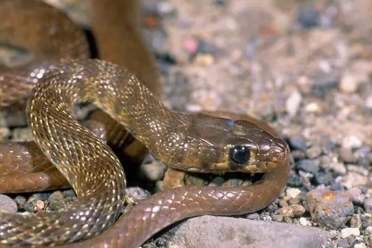
Flowered RacerPlatyceps florulentus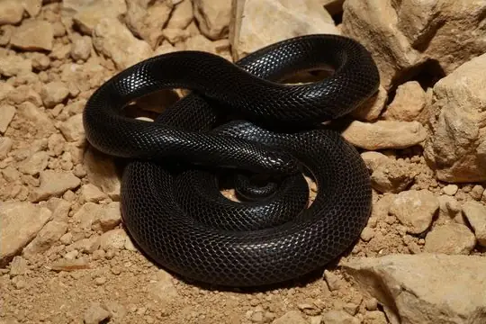
Israeli Mole ViperAtractaspis engaddensis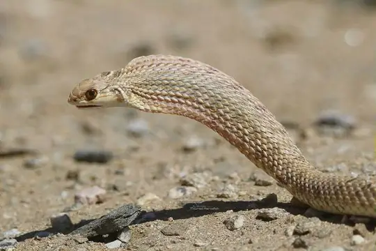
Moila SnakeMalpolon moilensis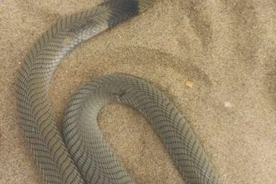
Nubian Spitting CobraNaja nubiae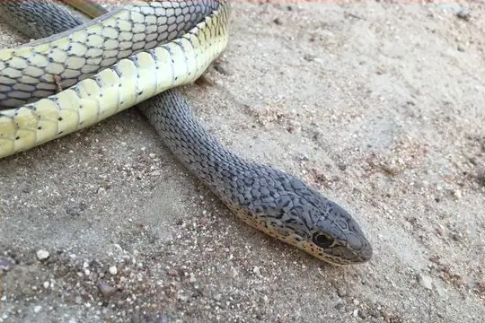
Olive Grass RacerPsammophis phillipsii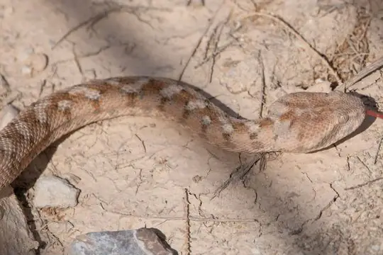
Palestine Saw-scaled ViperEchis coloratus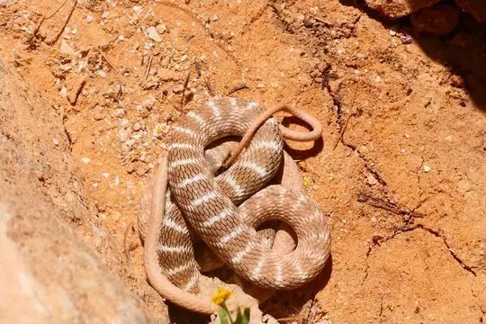
Rogers' RacerPlatyceps rogersi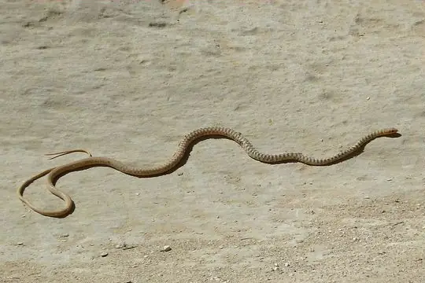
Sahara RacerPlatyceps saharicus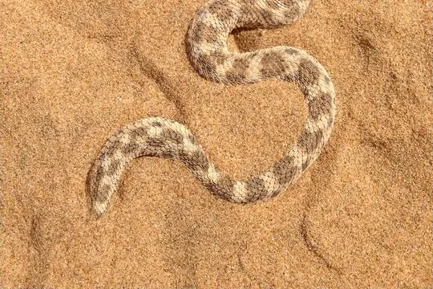
Sahara Sand ViperCerastes vipera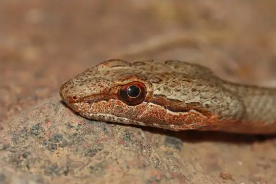
Saharan Sand SnakePsammophis aegyptius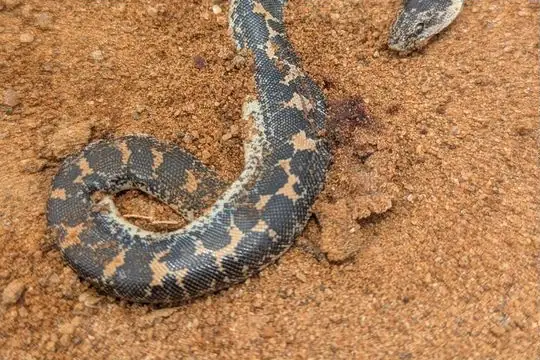
Sand BoaEryx colubrinus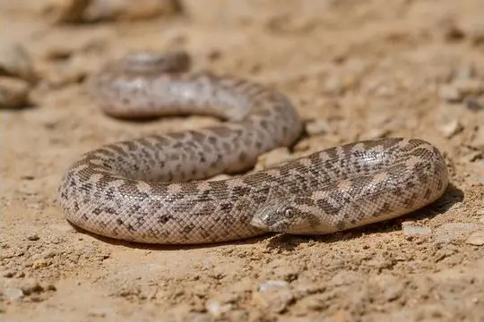
Sand Boa (jaculus)Eryx jaculus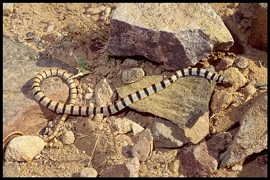
Sinai RacerPlatyceps sinai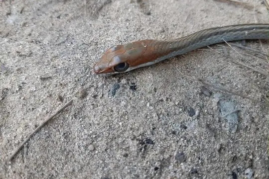
Speckled Sand RacerPsammophis punctulatus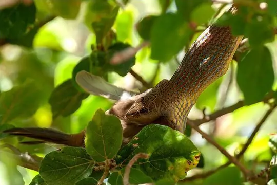
Striped Sand SnakePsammophis sibilans
No snakes in Egypt match.
Egypt’s snakes in numbers
- Families: Colubridae 10, Psammophiidae 5, Viperidae 5, Elapidae 4, Boidae 2, Atractaspididae 1, Lamprophiidae 1, Leptotyphlopidae 1, Typhlopidae 1.
- 1 is recorded in no other country in SnakeList: Egyptian Egg-eater.